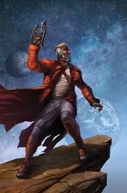
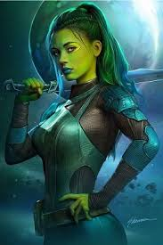
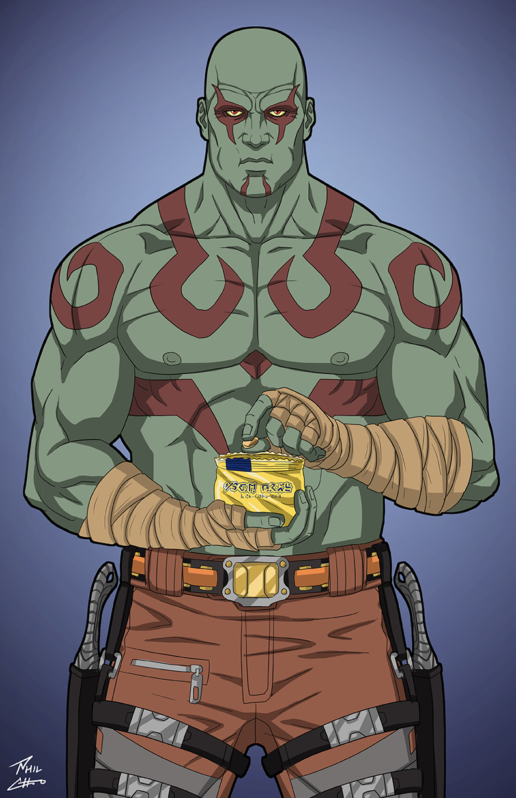
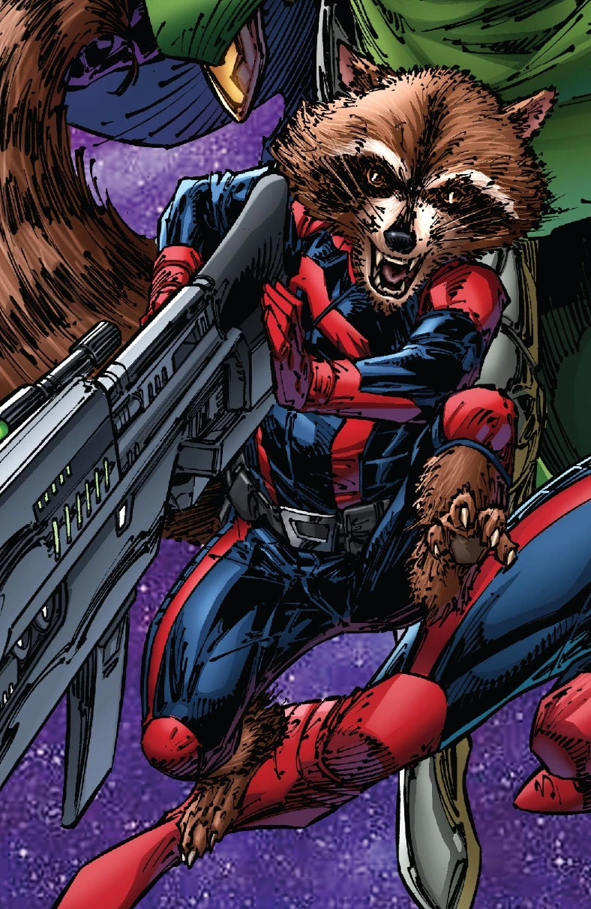
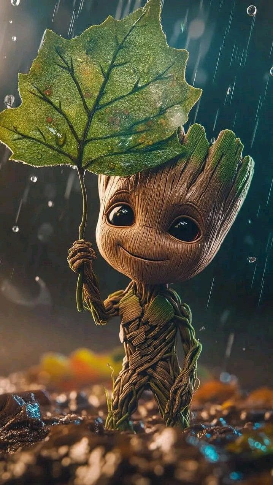
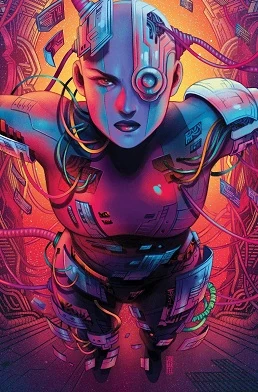

Члени команди Вартових Галактики

Star-Lord
Пітер Квіл - лідер Вартових. Авантюрист та боєць за справедливість у космосі.
Повний профіль
Gamora
Найнебезпечніша жінка Галактики. Боєць з величезним серцем та навичками бою.
Повний профіль
Drax
Могутній боєць з жагою справедливості та дивним почуттям гумору.
Повний профіль
Rocket
Єнот-боєць, тактик та противник правил. Малий розміром, але величезний характером.
Повний профіль
Groot
Деревоподібний гуманоїд з фразою "Я Грут". Вірний боєць та друг Ракети.
Повний профіль
Nebula
Кібернетично посилена боєць. Шукає спокути та знайшла сім'ю у Вартових.
Повний профільПро команду
Вартові Галактики - це малоймовірна група космічних авантюристів, які рятують галактику від неймовірних загроз. Вони стали героями, незважаючи на свої темні минулі.
Дата заснування: 2014
Лідери: Star-Lord
Штаб: Космос (Корабель Milano)
Мета: Пригоди та захист галактики
Повернутися до команд